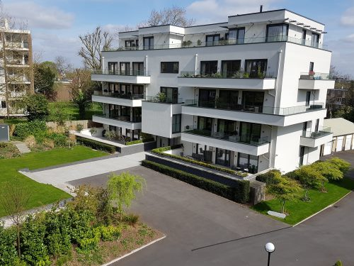
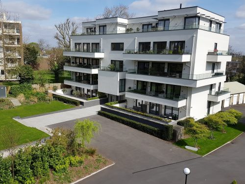

☰ |
 |

|
|---|
세월이 지나면서 당신의 모습은 어떻게 변했을까요? 당신의 자녀들은 어떤모습으로 자랐을까요? 그리고 부모님들은요? 그리고 즐겨찾는 공원과 산과 들판의 광경은요? 또한 벌판에 빌딩이 지어지는 순간부터 완성된 건물을 보고 있는 지금, 지난 몇 달동안 의 변화들이 궁금하지 않으신가요? 궁금하시다면 간직해두셨던 사진들을 모아보세요.그리고 Zoetic이 보여주도록 해보십시오.
Zoetic은 무엇일까요?
Zoetic 은 일련의 사진들을 가지고 시간경과에 따른 비디오를 생성합니다. 시리즈는 대체로 다음 중의 하나입니다.


Bins project 이미지
 

Flats project 이미지


Ageing project 이미지
Zoetic 은 아래와 같지않습니다
유투브 참고영상 (Zoetic 시연 및 사용법)
https://www.youtube.com/channel/UC9DS_eg5oE_9HmVVYuUBkNw
Zoetic의 Professional 버전에서만 사용할 수 있는 기능.
설정에서 단순모드를 사용중지해야 합니다:

Google Play and the Google Play logo are trademarks of Google LLC.
| Back | Contents | Your first project |
|---|